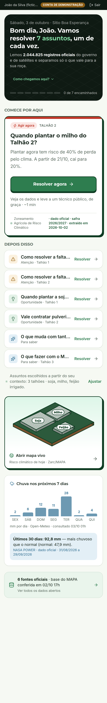
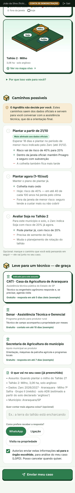

Produtor
Técnico público
CASO AB-1002 · CATI
Quando plantar o milho do Talhão 2?
Araraquara/SP3,06 ha · argilosoZarc: 40% agora63,7 mm em 7 dias

AgroBits
Leva o agrônomo até quem nunca teve um.
Dados abertos: Zarc/MAPA · Open-Meteo · NASA · IBGE · ANA — conta de demonstração